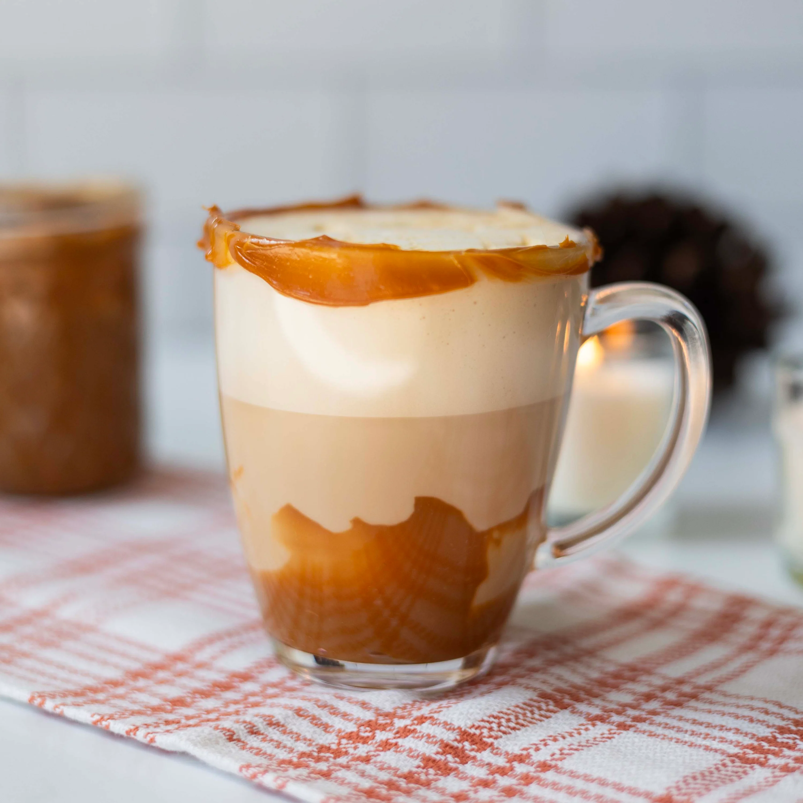

Home
Dulce de Leche Ice Coffee

Description
A delicious and refreshing iced coffee with dulce de leche, an irresistible combination that simply cannot be
missed in your routine. Wonderfully sweet, smooth, creamy, and an absolute delight, this iced latte has
everything you need to boost your energy.
It is the ideal drink to whip up over the weekend and enjoy during a relaxed morning, or to share for a special
moment with friends and family.
Ingredients
- 3 Tbsp Dulce de leche (or Caramel sauce)
- 3/4 Cup Whole milk
- 1/4 Cup Strong coffee or Espresso
- As needed Ice cubes
Steps
- Spoon the dulce de leche into the bottom of a tall glass.
- Pile plenty of ice cubes over the top to your liking.
- Pour the cold milk into the glass.
- Add the coffee (no need to sweeten thanks to the rich dulce de leche) and stir very well before drinking.